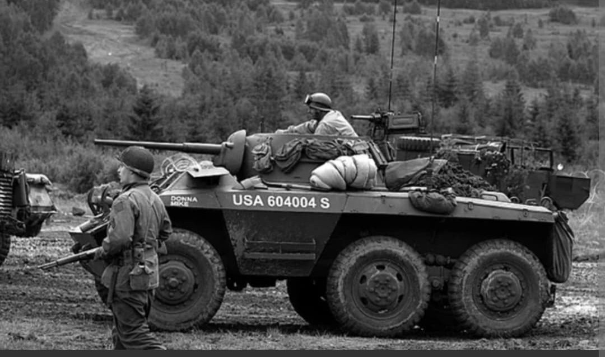
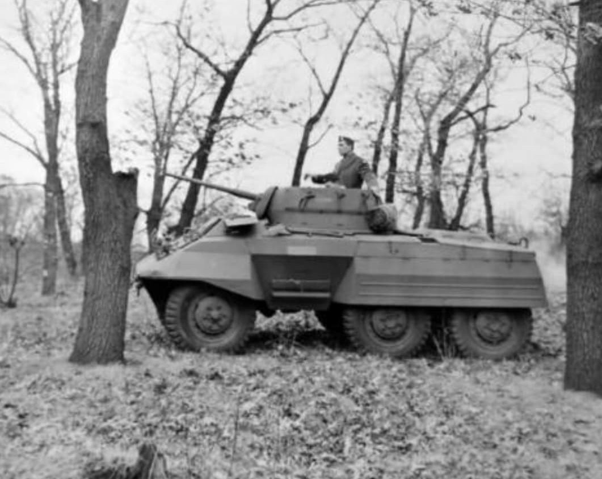
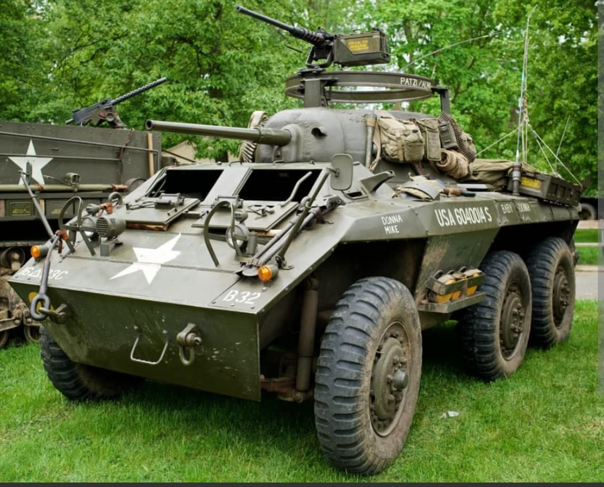

Les yeux et les oreilles rapides des divisions blindées et d'infanterie américaines

Le M8 Light Armored Car (surnommé « Greyhound » par les Britanniques en raison de sa rapidité) est l'automitrailleuse à 6 roues motrices principale utilisée par les forces armées des États-Unis et leurs alliés au cours de la Seconde Guerre mondiale.
Conçu spécifiquement pour les missions de reconnaissance rapide, de liaison tactique et d'éclairage en avant des lignes, le M8 offrait une excellente mobilité sur route tout en garantissant un appui-feu léger contre l'infanterie et les véhicules non blindés ennemie.
Développé par la **Ford Motor Company** à partir de 1941, le M8 repose sur un châssis 6x6 compact. Il était propulsé par un moteur 6-cylindres Hercules JXD à essence de 110 chevaux, lui permettant d'atteindre la vitesse remarquable de **90 km/h sur route**.
D'une masse de **7,8 tonnes**, le véhicule accueillait un équipage de 4 hommes (commandant, tireur, pilote, radio). Sa tourelle rotative ouverte sur le dessus était armée d'un canon de **37 mm M6** couplé à une mitrailleuse coaxiale Browning M1919 de 7,62 mm, complétée par une mitrailleuse lourde **.50 cal (12,7 mm)** montée sur affût pour la défense antiaérienne.

Faisant ses débuts opérationnels en Italie en 1943, le M8 Greyhound est devenu le véhicule standard des escadrons de reconnaissance des divisions blindées (Cavalry Reconnaissance Squadrons) et des unités d'infanterie en Europe et dans le Pacifique.
Si son blindage léger (19 mm au maximum) et son plancher vulnérable aux mines limitaient son emploi en combat frontal contre les chars lourds, son agilité et son long rayon d'action permettaient de repérer les positions ennemies, de sécuriser les flancs des colonnes et de capturer des ponts stratégiques.

Produit à plus de **8 500 exemplaires** entre 1943 et 1945, le M8 a également donné naissance au **M20 Armored Utility Car**, une version sans tourelle utilisée comme véhicule de commandement, de transport de matériel et de soutien radio.
Après la guerre, de nombreux M8 ont été fournis aux forces armées françaises (notamment durant la guerre d'Indochine) ainsi qu'à des dizaines de nations à travers le monde, restant en service actif jusqu'à la fin du XXe siècle dans certains pays.
Page du Musée HOP WW2 – Section Véhicules Terrestres Américains